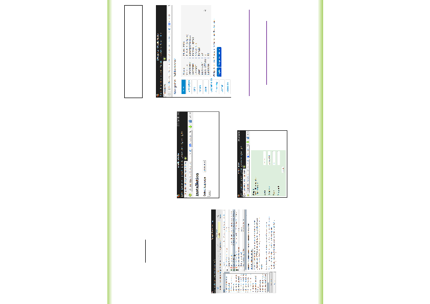

http://sourceforge.net/projects/jwphorald/
oder
htt://www.horald.de/jwphorald
Voraussetzung für die Installation von
Jwebportal
Unter Linux:
Einrichten eines Webservers (z.B. Apache),
PHP und MySQL. Von der Installation mit
Xampp für Linux würde ich abraten, da viele
Pakete bei den meisten Linux Distributionen
schon vorinstalliert sind. Am einfachsten ist es
in die Paketverwaltung zu gehen und nach den
Komponenten Apache, PHP und MySQL zu
suchen und dann die fehlenden Pakete
nachzuinstallieren.
Installation von Jwebportal
Zuerst muss die Archivdatei (z.B. webportal-alpha-
3.0.5.zip) in das htdocs-Verzeichnis des
Webservers entpackt werden. Danach kann über
den Webserver die Installation gestartet werden.
Die Installation von Jwebportal ist benutzergeführt.
Zuerst wird die Sprache abgefragt:
Nach der Begrüßungsmeldung werden dann die
Datenbankparameter abgefragt:
Danach wird das Anlegen der Datenbank bestätigt.
Nachdem die config.php Datei angelegt wurde,
kann das Webportal benutzt werden.
JWebportal
Stand: 2013-06-05 7:16